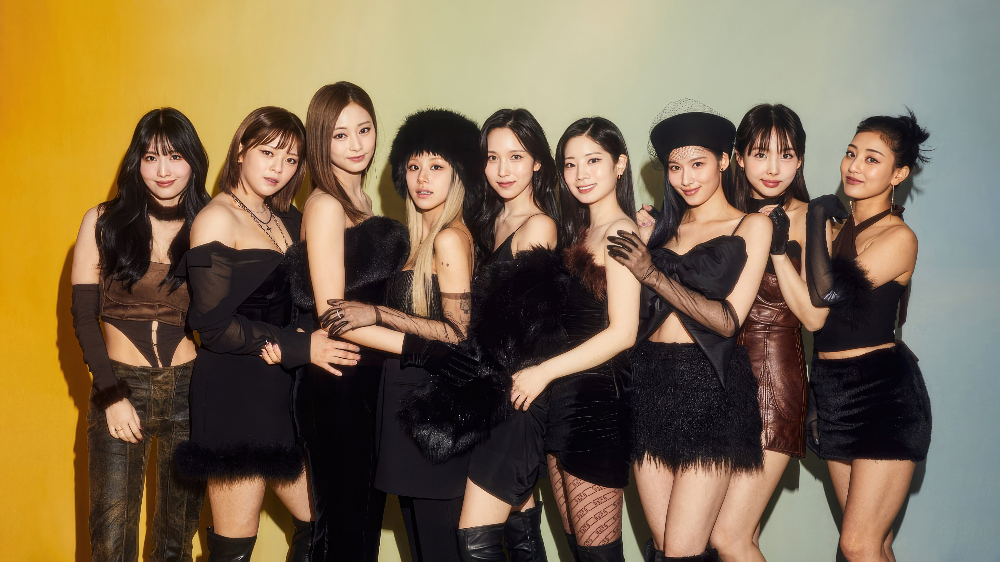

¡Hoy aprendemos HTML!
Ademas, en esta pagina vamos a ver mucho sobre TWICE... ¡Empezemos!
El nombre de las miembros es el siguiente (De izquierda a derecha)...
¡Aqui hay una tabla en donde podes ver un poco de informacion de cada una!
| Nombre completo | Edad | Rol en el grupo |
|---|---|---|
| Hirai Momo | 27 | Bailarina porincipal, Vocalista de apoyo, Rapera de apoyo |
| Yoo Jeong-yeon | 27 | Vocalista lider |
| Chou Tzuyu | 25 | Bailarina principal, Vocalista de apoyo, Visual, Maknae |
| Son Chae-young | 25 | Rapera principal, Vocalista de apoyo |
| Miyoui Mina | 27 | Bailarina principal, Vocalista de apoyo |
| Kim Da-hyun | 26 | Rapera principal, Vocalista de apoyo |
| Minatozaki Sana | 27 | Vocalista de apoyo, Bailarina lider |
| Im Na-yeon | 28 | Vocalista principal, Bailarina principal, Center |
| Park Ji-hyo | 27 | Lider, Vocalista principal |
¿Cual es tu favorita hasta ahora?
¿Conocias este grupo?
Si. No.